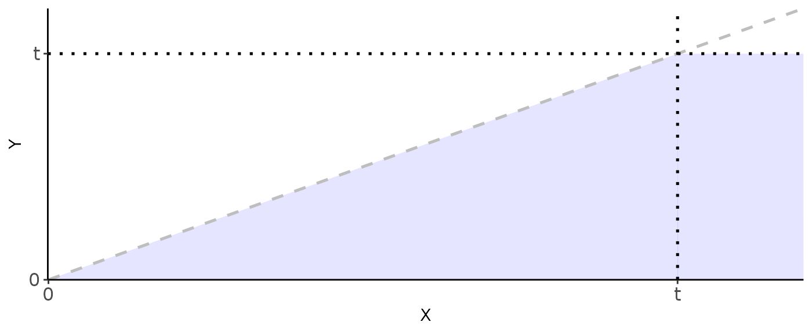

Methods
crc.RmdAccurate estimation of a cancer patient’s risk of death from cancer is crucial for treatment planning and patient counseling. Large data sets suitable for creating risk prediction models for cancer patients will not include detailed information on patient comorbidities. Conversely, large data sets with detailed information on comorbidities suitable prediction of other-cause mortality will not include detailed information on cancer burden. For example, take two patients with identical low risk disease profile. If the first patient is highly comorbid with low life expectancy and the second is healthy with a long life expectancy, a clinician may choose to aggressively treat the healthy patient and provide palliative care for the comorbid patient. To make this decision, a clinician must weigh the cancer risk against the patient’s risk of death from other causes. We, therefore, are in need of methods to combine risk predictions of death from cancer and death from other causes.
Most risk prediction models provide a single estimate of risk of death from other causes or death from cancer. For example, two calculators may give a patient a risk of death from cancer within 10 years of 15% and risk of death from other causes at 5% within the same 10 year period. Other calculators may provide additional information, for example, risks at multiple time points, or even an estimate of the entire survival curve, \(S(t)\).
With the estimates of risk from the calculators, we can assume a survival curve (if not already provided). For example, if a single risk estimate, \(p\), is provided at time \(t\), it is reasonable to assume an exponential distribution of time to death. In this case, we can define the time to death distribution with
\[ \lambda = \frac{-\log(1 - p)}{t} \]
where
\[ X \sim Exp(\lambda) = \lambda e^{-\lambda x},\ X = \{time\ to\ death\} \]
Let \(X\) and \(Y\) be independent random variables with support on \((0, \infty)\), and represent a patient’s risk of death from cancer and death from other causes, respectively. We wish to solve for the probability that \(P(Y < X, Y < t)\) for some \(t > 0\). That is, we wish to solve for the probability that a patient passes away from cancer before other causes and within \(t\) years. Let \(f_X(x)\), \(f_Y(y)\) and \(F_X(x)\), \(F_Y(y)\) be the probability and the cumulative density functions for \(X\) and \(Y\), respectively.
label_t <- function(x) dplyr::case_when(x == 1 ~ "t", x == 0 ~ "0", TRUE ~ "")
tibble(X = seq(0, 1, length.out = 2), Y = X) |>
ggplot(aes(x = X, y = Y)) +
geom_area(fill = "blue", alpha = 0.1) +
geom_area(
data = tibble(X = seq(1, 1.2, length.out = 2), Y = 1),
aes(x = X, y = Y),
fill = "blue", alpha = 0.1
) +
geom_function(fun = identity, colour = "grey", linetype = "dashed",
xlim = c(0, 1.2), size = 0.9) +
geom_hline(yintercept = 1, linetype = "dotted", size = 0.9) +
geom_vline(xintercept = 1, linetype = "dotted", size = 0.9) +
scale_y_continuous(labels = label_t, breaks = c(0, 1), expand = c(0, 0)) +
scale_x_continuous(labels = label_t, breaks = c(0, 1), expand = c(0, 0)) +
theme_classic() +
theme(panel.grid.major = element_blank(),
panel.grid.minor = element_blank(),
panel.background = element_blank(),
axis.text = element_text(size = 12))
#> Warning: Using `size` aesthetic for lines was deprecated in ggplot2 3.4.0.
#> ℹ Please use `linewidth` instead.
\[ \begin{aligned} P(Y < X, Y < t) &= P(Y < X | Y < t) P(Y < t) \\ &= \int_{y = 0}^{t}\int_{x = y}^{\infty} f_{X,Y|Y < t}(x, y)dxdy F_Y(t) \\ &= F_Y(t) \int_{y = 0}^{t}\int_{x = y}^{\infty} f_{X}(x) f_{Y | Y < t}(y) dxdy \\ &= F_Y(t) \int_{y = 0}^{t}\int_{x = y}^{\infty} f_{X}(x) \frac{f_Y(y)}{F_Y(t)} dxdy \\ &= \int_{y = 0}^{t}\int_{x = y}^{\infty} f_{X}(x) f_Y(y) dxdy \\ &= \int_{y = 0}^{t} f_Y(y) [1 - F_X(y)] dy \\ &= \int_{y = 0}^{t} f_Y(y) dy - \int_{y = 0}^{t} f_Y(y) F_X(y) dy \\ &= F_Y(t) - \int_{y = 0}^{t} f_Y(y) F_X(y) dy \end{aligned} \]
The formulas above hold for any distributions. However, let’s now make the assumption that \(X \sim Exp(\lambda_x)\) and \(Y \sim Exp(\lambda_y)\).
\[ \begin{aligned} P(Y < X, Y < t) &= F_Y(t) - \int_{y = 0}^{t} f_Y(y) F_X(y) dy \\ &= F_Y(t) - \int_{y = 0}^{t} f_Y(y) (1 - e^{-\lambda_x y}) dy \\ &= F_Y(t) - \int_{y = 0}^{t} f_Y(y) dy + \int_{y = 0}^{t} f_Y(y) e^{-\lambda_x y} dy \\ &= F_Y(t) - F_Y(t) + \int_{y = 0}^{t} f_Y(y) e^{-\lambda_x y} dy \\ &= \int_{y = 0}^{t} \lambda_y e^{-\lambda_y y} e^{-\lambda_x y} dy \\ &= \frac{\lambda_y}{\lambda_y + \lambda_x} \int_{y = 0}^{t} (\lambda_y + \lambda_x) e^{-(\lambda_y + \lambda_x)y} dy \\ &= \frac{\lambda_y}{\lambda_y + \lambda_x} \Big[1 - e^{-(\lambda_y + \lambda_x) t}\Big] \end{aligned} \]